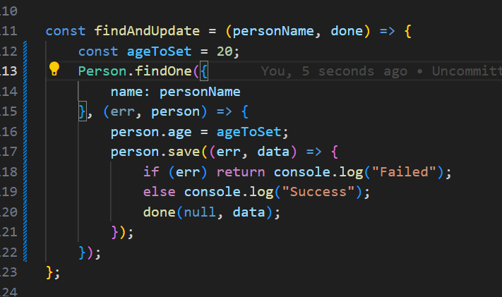

findOneAndUpdate();
this exercise says that find an object and then update the record in the databse.

findByIdAndRemove();
in this exercise we have to find the object in the database and then remove it.